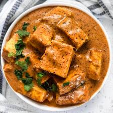

Delhi
Delhi, the capital of India, is rich in history and culture, featuring a diverse geography that includes urban landscapes and green spaces. Notable places include the Red Fort, India Gate, and Qutub Minar. The city is famous for its vibrant street food scene, offering dishes like chaat , parathas, and butter chicken.
Geography
- Location: Delhi is situated in north-central India, primarily on the west bank of the Yamuna River.
- Climate: The city experiences extreme dryness with hot summers and a monsoon season that brings increased humidity.
- Topography: The elevation ranges from about 700 to 1,000 feet, with the Aravalli Range to the south and west, and the Yamuna River forming the eastern boundary.
Famous Places
- Red Fort
- India Gate
- Qutub Minar
- Humayun's Tomb
The Red Fort, also known as Lal Qila is a historic fort in Delhi, India, that historically served as the main residence of the Mughal emperors. Emperor Shah Jahan commissioned construction of the Red Fort on 12 May 1639, when he decided to shift his capital from Agra to Delhi.

At the centre of New Delhi stands the 42 m high India Gate, an “Arc-de-Triomphe” like archway in the middle of a crossroad. Almost similar to its French counterpart, it commemorates the 70,000 Indian soldiers who lost their lives fighting for the British Army during the World War I.
Qutub Minar is the world's tallest minaret made of brick. Its height is 72.5 meters and its construction was initiated by Qutub-Ud-Din Aibak. The minaret was built following the architecture of the Minaret of jam located in Afghanistan.
The tomb of Humayun, second Mughal Emperor of India, was built by his widow, Biga Begum (Hajji Begum), in 1569-70, 14 years after his death, at a cost of 1.5 million rupees. The architect was Mirak Mirza Ghiyath. It was later used for the burial of various members of the ruling family and contains some 150 graves.
Food
- Street Food: Delhi is renowned for its street food, including:
- Chole Bhature: It is a combination of chana masala (spicy white chickpeas) and bhatura/puri, a deep-fried bread made from maida.
- Chaat: A savory snack made with potatoes, chickpeas, and various spices.
- Parathas: Stuffed flatbreads, often served with pickles and yogurt.
- Butter Chicken: A creamy tomato-based curry that is a staple in Delhi's cuisine. 

Tradition and Culture
- Festivals: Delhi celebrates a variety of festivals, including:
- Diwali: The festival of lights, celebrated with great enthusiasm.
- Holi: The festival of colors, marking the arrival of spring.
- Eid: Celebrated by the Muslim community with prayers and feasting.
- Cultural Institutions: The city is home to numerous museums, galleries, and cultural centers, such as:
- National Museum of India: Showcasing India's artistic heritage.
- Indira Gandhi National Centre for the Arts: Promoting various art forms.
- Architectural Heritage: Delhi's architecture reflects its diverse history, with influences from Mughal, British colonial, and modern styles. Notable examples include:
- Jama Masjid: One of the largest mosques in India.
- Lotus Temple: A Bahá'í House of Worship known for its flower-like architecture.